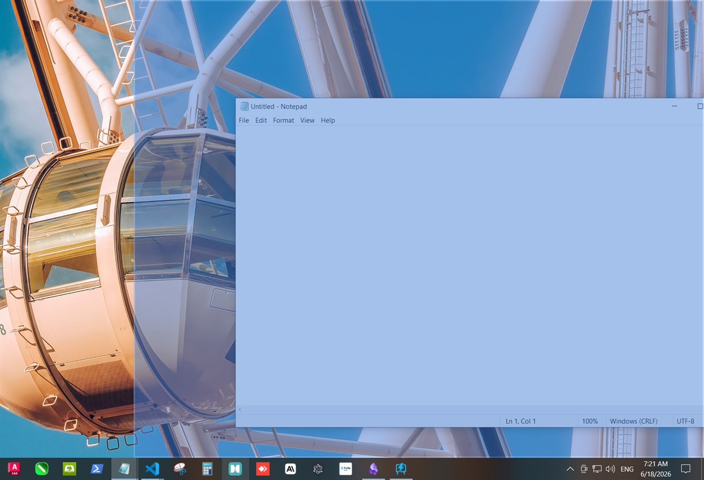
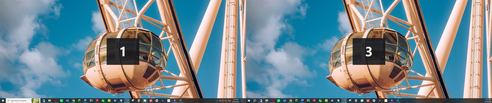

Lanzador multimonitor y organización de ventanas — Manual de Usuario
FCLX Studios · v0.1.28 · Español
1 · ¿Qué es InstaDesk?
InstaDesk convierte el tedioso ritual de cada mañana —abrir las mismas apps y arrastrar cada ventana a su sitio en varios monitores— en un solo clic.
Organizas las apps en una cuadrícula visual para cada monitor, guardas esa disposición como un Diseño y, a partir de ahí, un solo Aplicar abre cada app y la coloca exactamente donde la pusiste. Puedes tener muchos diseños (trabajo, diseño gráfico, trading, streaming…), agrupar varios en un Preajuste rápido, lanzarlos con un atajo de teclado, ajustar al vuelo una ventana con Snap, o capturar un diseño tal como se ve tu pantalla ahora mismo.
¿Es difícil? No — se aprende rápido. Pero InstaDesk es una herramienta potente y con profundidad real (cuadrículas por monitor, argumentos de inicio personalizados, grupos de pestañas del navegador, atajos globales). Este manual recorre cada función; la pestaña Ayuda de la app es la versión corta.
2 · Conceptos básicos
Solo necesitas cinco ideas:
Monitor
Organizas una pantalla a la vez. El selector de Monitor (panel izquierdo) elige cuál; la Disposición de pantallas muestra cómo están colocadas físicamente. El botón Identificar monitores muestra el número de cada pantalla para que siempre sepas cuál es cuál.
Cuadrícula y celdas
Cada monitor se divide en una cuadrícula de celdas (p. ej. 6×6). Puedes usar una densidad de cuadrícula distinta en cada monitor.
Región
Un bloque rectangular de celdas al que asignas una app. Puede ser una sola celda o una banda ancha — por ejemplo, la mitad izquierda de un monitor.
Diseño
Un conjunto guardado de regiones en todos tus monitores — el corazón de InstaDesk. Aplícalo para abrir y colocar todo.
Preajuste rápido
Un grupo de varios Diseños que aplicas juntos con un clic (o un atajo).
3 · La interfaz, de un vistazo
Panel izquierdo — Preajustes rápidos, el selector de Monitor, la Disposición de pantallas y el botón Identificar monitores.
Centro — la cuadrícula de trabajo del monitor seleccionado, donde seleccionas celdas y ves las asignaciones.
Panel derecho — pestañas de Apps, Diseños (incl. Capturar disposición actual), Configuración y Ayuda.
Barra inferior — Ajustar (Snap), el botón Minimizar todo / Restaurar todo, Borrar cuadrícula actual, Borrar todas las cuadrículas y el tamaño de Cuadrícula por monitor.
Barra superior — el logo de InstaDesk, la versión actual (arriba a la derecha) y la marca de FCLX Studios.
4 · Inicio rápido: tu primer diseño
Elige un monitor en el panel izquierdo.
En la cuadrícula central, arrastra sobre las celdas para seleccionar una región (por ejemplo, la mitad izquierda).
Abre la pestaña Apps, elige una app (p. ej. Chrome) y pulsa Asignar a la selección.
Selecciona otra región y asigna una segunda app. Repite en otros monitores con el selector de Monitor.
Abre la pestaña Diseños → + Nuevo diseño, ponle un nombre y guarda.
Pulsa Aplicar en la tarjeta del diseño — InstaDesk abre cada app y la coloca en su sitio.
¿Con prisa? ¿Ya tienes tus ventanas donde las quieres? Salta a la sección 8 y deja que InstaDesk capture el diseño por ti.
5 · La cuadrícula y la asignación de apps
Seleccionar y asignar
Arrastra sobre las celdas para seleccionar una región rectangular y pulsa Asignar a la selección en la pestaña Apps. Usa Desasignar selección para vaciarla. Las regiones deben ser rectángulos.
Tamaño de cuadrícula (por monitor)
El selector Cuadrícula de la barra inferior fija la densidad del monitor actual — 6×6 para zonas amplias, 10×10 para un control fino. Cada monitor recuerda su propio tamaño. Cambiarlo en un monitor que ya tiene apps pide confirmación, porque rehace esa cuadrícula.
Argumentos de inicio personalizados
Da a una celda sus propios argumentos de inicio en la pestaña Apps — por ejemplo, una ruta de carpeta para el Explorador de archivos, para que dos regiones abran dos carpetas distintas de la misma app. Así colocas varias ventanas distintas de un mismo programa.
Borrar
Borrar cuadrícula actual vacía el monitor actual; Borrar todas las cuadrículas vacía todos los monitores (con confirmación). Borrar nunca afecta a los Diseños guardados.
6 · Apps, URLs y Favoritos
La pestaña Apps del panel derecho tiene tres sub-pestañas.
Apps
Elige del catálogo integrado o pulsa Examinar… para añadir el .exe de cualquier programa. Los programas añadidos quedan en el Historial de aplicaciones para reutilizarlos.
URLs — el Constructor de URLs
Crea un grupo de pestañas del navegador que se abren juntas en su propia ventana:
Elige un Navegador. Pulsa + Añadir navegador para elegir entre los navegadores detectados en tu PC, o busca el .exe de un navegador.
Añade un Grupo de pestañas, dale un título y añade las URLs.
Define el comportamiento de apertura (una ventana, por grupo o por URL) y pulsa Guardar. El grupo se comporta como cualquier app que puedes asignar a la cuadrícula.
Favoritos
Ten a un clic tus apps y URLs más usadas.
7 · Diseños
Un Diseño guarda qué apps van dónde, en todos tus monitores. Al guardar con + Nuevo diseño, ponle un nombre que reconozcas — por ejemplo «Trabajo», «Trading» o «Edición». Puedes mantener hasta 26 diseños guardados a la vez.
Aplicar — abre y coloca todo lo del diseño.
Editar — reabre el diseño en la cuadrícula para reorganizar y volver a guardar.
Renombrar (✎) — dale un nuevo nombre a un diseño; su contenido no cambia.
Exportar / Importar — comparte un diseño como archivo .json (su nombre viaja con él).
Si una app guardada no tiene programa ni URL configurados, solo esa app se omite al guardar (con un aviso) — el resto del diseño se guarda con normalidad.
8 · Capturar un Diseño desde tu pantalla
En vez de construir un diseño celda por celda, puedes colocar tus ventanas como quieras —a mano o con Snap / Arrastrar para ajustar— y dejar que InstaDesk lea la pantalla y cree el Diseño por ti.
Coloca tus ventanas en tus monitores.
Abre la pestaña Diseños y pulsa Capturar disposición actual.
Una ventana de revisión lista cada ventana encontrada, agrupada por monitor. Marca las que quieras incluir (las apps que no puede identificar se señalan y se omiten).
Para cada ventana de navegador, pega las URLs que quieras que reabra (una por línea) — un navegador no puede revelar sus propias páginas abiertas, así que las indicas aquí.
Ponle un nombre al diseño y pulsa Guardar. Queda como un Diseño normal que puedes Aplicar, Editar, renombrar o exportar.
Bueno saberlo: las apps que se ejecutan como administrador (como algunos clientes de CCTV) se identifican y se incluyen. Las ventanas colocadas libremente se ajustan a la región de cuadrícula más cercana. Cada ventana de navegador capturada se reabre en su propia ventana con las URLs que añadiste como pestañas.
9 · Preajustes rápidos
Un Preajuste rápido agrupa varios Diseños para aplicarlos todos juntos con un clic — ideal para un espacio multimonitor completo montado a partir de piezas reutilizables. Puedes mantener hasta 26 Preajustes rápidos, y aplicar los primeros nueve con un atajo de teclado.
Pulsa Gestionar PR en el panel izquierdo.
Crea un preajuste y añade los Diseños que debe incluir.
De vuelta en la pantalla principal, elige el Preajuste rápido y pulsa Aplicar.
10 · Ajustar una ventana — Snap y Arrastrar para ajustar
Ajustar coloca una única ventana ya abierta en una región — sin necesidad de un Diseño. Hay dos formas.
Snap (la cuadrícula emergente)
Pulsa Ajustar → M1 en la barra inferior (el número es el monitor activo).
Aparece una cuadrícula emergente en ese monitor.
Pulsa una región; la última ventana que usaste se ajusta en ella.
Arrastrar para ajustar (mantén Mayús y arrastra)
Actívalo en Configuración → Cuadrícula y ajuste → Arrastrar para ajustar. Después, sobre cualquier ventana:
Mantén Mayús y arrastra la ventana.
Un resaltado translúcido muestra la zona donde caerá — bordes = mitades (izquierda, derecha, arriba, abajo), esquinas = cuadrantes, centro = maximizar.
Suelta para ajustarla ahí. Funciona en todos los monitores.

Algunas apps imponen su propia posición (ciertas herramientas de CCTV / vídeo) y pueden negarse a moverse.
Minimizar todo / Restaurar todo
La barra inferior de Snap también tiene un botón de un clic que funciona como un «Mostrar escritorio» fiable:
🗕 Minimizar todo oculta de golpe todas las ventanas abiertas en todos tus monitores.
Vuelve a pulsar — el botón pasa a 🗖 Restaurar todo — para devolver cada ventana a la posición y el tamaño exactos que tenía antes. No las maximiza a pantalla completa; cada una vuelve al marco en el que estaba.
Las ventanas que se ejecutan como administrador (por ejemplo algunos clientes de CCTV como iVMS-4200) se dejan intactas, e InstaDesk te indica cuántas omitió.
11 · Atajos globales
InstaDesk responde a estos atajos desde cualquier sitio — incluso cuando su ventana no está enfocada:
Atajo
Acción
Ctrl + Alt + D
Mostrar / enfocar el panel de InstaDesk
Ctrl + Alt + S
Ajustar la ventana activa (abre la cuadrícula de Snap)
Ctrl + Alt + 1 … 9
Aplicar el Preajuste rápido 1–9
Los atajos de Mostrar y Ajustar son reasignables en Configuración → Atajos globales — pulsa el atajo y presiona tu combinación preferida (debe incluir Ctrl, Alt o la tecla Windows).
12 · Monitores, Identificar y la Disposición de pantallas
El selector de Monitor (panel izquierdo) elige qué pantalla organizas. La Disposición de pantallas debajo muestra tus pantallas en su posición física real, cada una con su número.
Pulsa Identificar monitores para mostrar unos segundos un número grande en cada pantalla física — igual que la función Identificar de Windows. El número mostrado es el mismo que usa InstaDesk en todas partes: la casilla de la Disposición de pantallas y el monitor al que apunta un Diseño.

13 · Configuración
La pestaña Configuración (panel derecho) reúne las preferencias de InstaDesk:
Tema — Claro, Oscuro o Sistema.
Idioma — English o Español.
Iniciar al arrancar el sistema — abre InstaDesk automáticamente al iniciar sesión (activado por defecto; desactívalo aquí).
Tamaño de cuadrícula predeterminado — el tamaño con el que empiezan los monitores nuevos o borrados.
Margen de ventana — un hueco que tiene en cuenta el bisel para que las ventanas no queden bajo los marcos del monitor.
Arrastrar para ajustar — activa el ajuste con Mayús+arrastrar descrito en la sección 10.
Atajos globales — consulta y reasigna los atajos de teclado.
Actualizaciones — busca e instala nuevas versiones (ver sección 14).
Compartir datos de uso anónimos — opcional, activado por defecto; envía solo diagnósticos agregados y no personales para ayudar a mejorar InstaDesk. Nunca se envían nombres de archivo, URLs ni el contenido de la pantalla. Desactívalo cuando quieras.
14 · Mantente actualizado
InstaDesk se mantiene al día con actualizaciones automáticas firmadas:
Busca actualizaciones poco después de abrirse y de forma periódica mientras está abierto. Cuando hay una nueva versión, aparece una barra fina «InstaDesk X.Y.Z ya está disponible» en la parte superior del panel, con Instalar y reiniciar (o Más tarde).
También puedes buscar cuando quieras en Configuración → Actualizaciones → Buscar actualizaciones — útil si prefieres no esperar a la comprobación automática.
Las actualizaciones están firmadas criptográficamente, así que solo se instalan versiones auténticas de InstaDesk.
La versión actual se muestra siempre arriba a la derecha de la cabecera y al final de la pestaña Ayuda.
15 · Consejos y resolución de problemas
Una app no se ajusta. Algunas apps (ciertas herramientas de CCTV / vídeo) colocan sus propias ventanas. Ciérralas y vuelve a abrirlas, o déjalas fuera del diseño.
Solo se abre una ventana. Las apps de instancia única (p. ej. Outlook, Teams) abren una sola ventana; asignarlas a varias celdas no crea copias.
Un navegador capturado se abrió dentro de una ventana existente. InstaDesk fuerza a que cada ventana de navegador de un Diseño se abra por separado — asegúrate de tener la última versión si ves que se fusionan.
Un acceso directo no abre. Los accesos directos de Windows (.lnk) no se pueden abrir directamente — apunta al .exe real en la pestaña Apps.
Una app no se abre. Revisa su ruta en la pestaña Apps y usa Examinar… para corregirla.
Mi navegador añadido desapareció / abrió el navegador equivocado. Usa + Añadir navegador y elige uno detectado (o busca su .exe) para que InstaDesk tenga su ruta de programa real.
Un atajo no hace nada. Puede que otra app ya use esa combinación — reasigna el de InstaDesk en Configuración → Atajos globales.
Las ventanas caen en el sitio equivocado. Si además usas otra herramienta de ajuste de ventanas, puede competir con InstaDesk y mover las ventanas tras colocarlas — ciérrala para que InstaDesk haga el trabajo sin interferencias.
16 · Límites y capacidades
De un vistazo, lo que InstaDesk puede almacenar:
Elemento
Límite
Diseños guardados — multimonitor
26
Diseños guardados — monitor único
26
Preajustes rápidos
26 (los primeros 9 tienen atajo)
Densidad de cuadrícula (por monitor)
4×4, 6×6, 8×8 o 10×10
Ventanas por monitor (un Diseño)
hasta el tamaño de la cuadrícula — 36 en 6×6, 100 en 10×10
Monitores
todos los que Windows detecte
Margen de ventana (bisel)
0–16 px
Zonas de Arrastrar para ajustar
mitades, cuadrantes, maximizar — por monitor
URLs por grupo · Favoritos
sin límite fijo
¿Llegaste a 26 diseños guardados? Elimina uno para liberar un espacio, o combina diseños relacionados en un Preajuste rápido. Se planean límites mayores en una futura actualización si los clientes los necesitan.